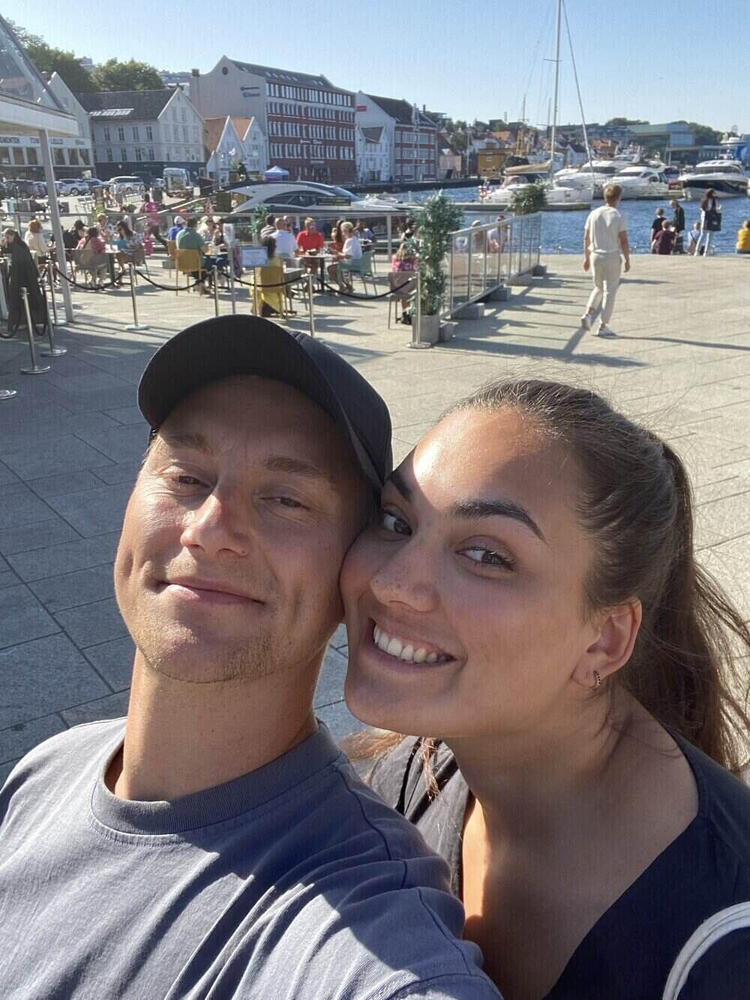
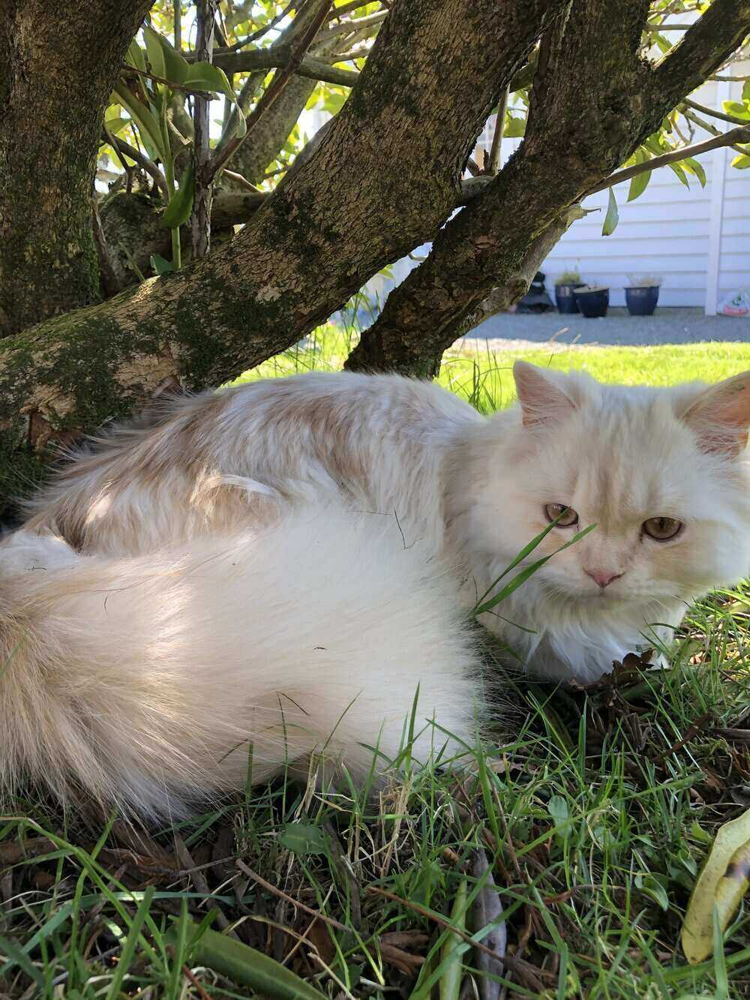
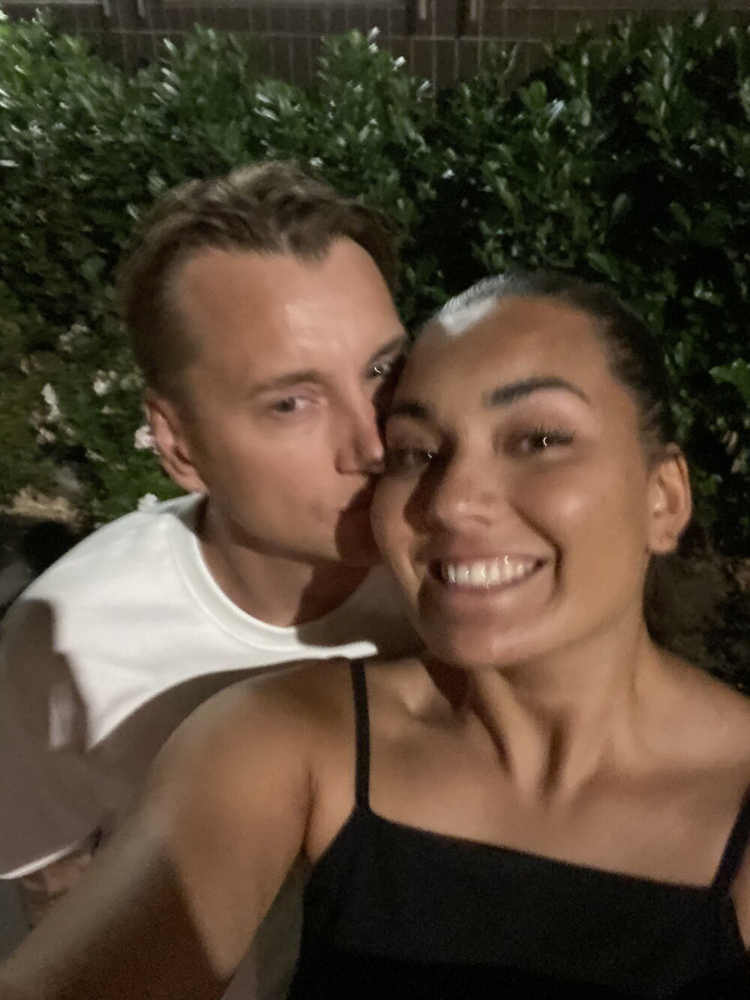

About me
Hello. My name is Preben Andrè Eide Fjeldsbø. I'm a man of 32 years. I live at Damsgård in Bergen with my little nice family. With my kind, good and nice girlfriend Marcella and our little nice kitten Simba. We really like living here. We live very centrally, urban and right by the sea. It is a small distance to the centrum and very nice to walk right outside the apartment. I really like to exercise and keep fit either by going to the gym or taking a jog.
When I was young, I grew up in a place called Bønes in Bergen. It was a very nice childhood with my mother, father and my two older sisters. When I was young I loved football. Played football all the time and the dream was to become a football player. But with me like so many others, this dream did not come true. But it's going just fine. When I was 19 I was 1 year in the Air Force. After that I have studied and worked in several places. Has worked for Hansa Borg Breweries, Peppes Pizza, Securitas and Lefdal, among others. Never quite found a study I liked and felt I was suited for so in recent years I have worked at Hordasped and really enjoyed it very much.
But then one day my girlfriend and I sat down to look at possible studies she could start studying. Then I suddenly found something I could imagine me working with and that was front-end development. Always enjoyed working with computers and trying to develop things. So when I found and read about this line I thought why have I not started on this before? I decided almost immediately that I wanted to study this. So last year I have studied front-end development and enjoy it very much. I find it incredibly fun to work with and love to learn more and more. Really think I have found a line and a field I will love working with. I'm very happy about that.
